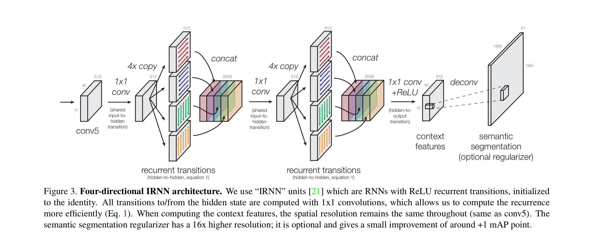
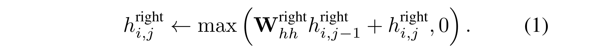
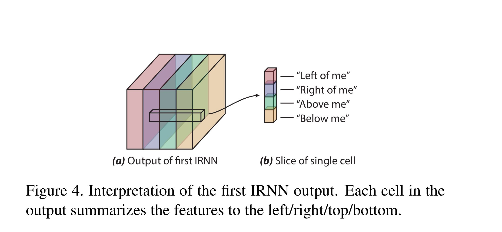

Inside-Outside Net 论文阅读笔记
- Inside-Outside Net: Detecting Objects in Context with Skip Pooling and Recurrent Neural Networks
- 时间：2015 年 12 月
SENet——胡杰：https://www.sohu.com/a/161633191_465975
卷积核作为卷积神经网络的核心，通常被看做是在局部感受野上，将空间上（spatial）的信息和特征维度上（channel-wise）的信息进行聚合的信息聚合体。
最近很多工作被提出来从空间维度层面来提升网络的性能，如 Inception 结构中嵌入了多尺度信息，聚合多种不同感受野上的特征来获得性能增益；在 Inside-Outside 网络中考虑了空间中的上下文信息；还有将 Attention 机制引入到空间维度上，等等。这些工作都获得了相当不错的成果。
已经有很多工作在空间维度上来提升网络的性能。那么很自然想到，网络是否可以从其他层面来考虑去提升性能，比如考虑特征通道之间的关系？我们的工作就是基于这一点并提出了 Squeeze-and-Excitation Networks（简称 SENet）。在我们提出的结构中，Squeeze 和 Excitation 是两个非常关键的操作，所以我们以此来命名。我们的动机是希望显式地建模特征通道之间的相互依赖关系。
采用了一种全新的「特征重标定」策略。具体来说，就是通过学习的方式来自动获取到每个特征通道的重要程度，然后依照这个重要程度去提升有用的特征并抑制对当前任务用处不大的特征。
Abstract
-
Inside-Outside Net (ION)：一个利用感兴趣区域的内部和外部的信息的物体检测器（object detector）。
-
利用 skip pooling 从多个尺度和抽象级别提取信息。
-
上下文（context）和多尺度（multi-scale）表示改进了小物体的检测。
1. Introduction
目前 SOTA 的检测方法仅使用对象感兴趣区域（region of interest, ROI）附近的信息，这对可能限制了被检测到的物体的类型和准确性。
本篇论文使用了两种信息：
（1）multi-scale representation
通过从 ConvNet 中的多个较低级别的卷积层中进行池化，捕获细粒度的细节（fine-grained details）。
（2）contextual information
为了收集上下文信息，使用了空间递归神经网络（spatial Recurrent Neural Networks, RNNs）。
RNN 在图像上水平和垂直传递空间变化的上下文信息。至少使用两个 RNN 层可确保信息可以在整个图像上传播。
其他获取上下文信息的方法还有:
- global average pooling：提供了关于整张图片的信息。
- additional convolutional layers.
使用 proposal detectors 来识别图片中的 ROIs，将每个 ROIs 归类为包含一个或不包含任何感兴趣的对象。使用 dynamic pooling 可以通过一次前向传播有效的评估成千上万中不同的获选 ROI。对于每个候选的 ROI，将多尺度和上下文信息合并为一个层，并通过几个全连接层进行分类。
上下文和多尺度这两种来源在本质上都是互补的。直觉上也很符合，上下文特征在整个图像中看起来很宽泛，而多尺度特征捕获了更细粒度的细节。
总的来说，这种方法比以前的最新技术更擅长检测小物体。对于椅子等被严重遮挡的对象，使用上下文信息可以缓解。
论文的贡献：
- （1）介绍了利用上下文和多尺度 skip pooling 进行对象检测的 ION 结构。
- （2）在 PASCAL VOC 2007（mAP 为 79.2％），VOC 2012（mAP 为 76.4％）和 COCO（mAP 为 24.9％）上取得了 SOTA 的结果。
- （3）进行了大量的实验，评估了各种选择。
- （4）分析检测器的性能，发现整体上提高的准确性，特别是对于小物体。
2. Prior Work
ConvNet object detectors：AlexNet、R-CNN、Fast R-CNN、OverFeat、Fast R-CNN、SPP-Net.
Spatial RNNs：bidirectional RNNs.
Skip-layer connections.
3. Architecture: Inside-Outside Net (ION)

ION 是一种在 ROI 内外都具有改进的描述符的检测器。图像由单个深层 ConvNet 处理，并且 ConvNet 各个阶段的卷积特征图都存储在内存中。
在网络的顶部，一个 2 倍堆叠的 4 方向 IRNN（稍后说明）计算上下文特征，这些特征描述全局和局部图像。
context features 与 “conv5” 具有相同的尺寸。每个图像执行一次。此外，有数千个 proposal regions（ROIs），其中可能包含对象。对于每个 ROI，从几层（“ conv3”，“ conv4”，“ conv5”和“context features”）中提取固定长度的特征描述符。
对描述符进行 L2 归一化，级联（concatenated），重新缩放（re-scaled）和降维（1x1 卷积），以针对大小为512x7x7 的每个 poposal 生成固定长度的特征描述符。
两个全连接层处理每个描述符并产生两个输出：K 个对象类别的预测之一（“ softmax”）和对投标区域的边界框（“ bbox”）的调整。
3.1 Pooling from multiple layers
最近成功的检测器，例如 Fast R-CNN，Faster R-CNN 和 SPPnet，都来自 VGG16 的最后卷积层（“ conv5_3”）。为了将其扩展到多层，我们必须考虑尺寸（dimensionality）和振幅（amplitude）问题。
使用经过 ImageNet 预训练过的 VGG16，要汇聚更多的层，最终的特征还必须是 512x7x7，除了匹配原始形状外，还必须匹配原始激活幅度，以便输入到 fc6 中。
-
为了匹配所需的 512x7x7：通道轴进行 concatenate，1x1 卷积减小尺度。
-
为了匹配原始幅度，对每个合并的 ROI 进行归一化，然后根据经验确定的比例重新缩放。
3.2. Context features with IRNNs

在最后一个卷积层（conv5）的顶部，放置了沿图像横向移动的 RNN。
传统上，RNN 沿序列从左到右移动，在每一步都消耗输入，更新其隐藏状态并产生输出。通过将 RNN 沿着图像的每一行和每一列放置，将此扩展到了二维。总共有四个 RNN 在基本方向上移动：右，左，下，上。 RNN 位于 conv5 的顶部，并产生与 conv5 相同形状的输出。
有研究表明，如果将递归权重矩阵初始化为恒等矩阵，则网络将更易于训练并且擅上对远程依赖关系进行建模。
IRNN：ReLU RNN 以这种方式初始化。优点：
- 在语言建模任务中的性能几乎与 LSTM 相同
- 非常易于实现和并行化
- 比 LSTM 或 GRU 的计算快得多
四个独立的 IRNN 在四个方向上移动。输入到隐藏的过渡（input-to-hidden transition）是 1x1 卷积，并且可以在不同方向上共享它。
这是向右移动的 IRNN 的更新；对于其他方向，存在类似的方程式：

在第一个 4 方向 IRNN（两个 IRNN 中的一个）之后，获得了一个特征图，该特征图汇总了图像中每个位置的附近物体。如图 4 所示，可以看到第一个 IRNN 在每个单元的左/右/上/下创建了特征的摘要。然后，随后的 1x1 卷积将这些信息混合在一起以减小尺寸。

在第二个 4 方向 IRNN 之后，输出上的每个单元都取决于输入的每个单元。这样，上下文功能既是全局的又是局部的。这些功能因空间位置而异，并且每个单元格都是相对于该特定空间位置的图像的全局摘要。
4. Results
评估数据集：PASCAL VOC 2007, VOC 2012, and on MS COCO.